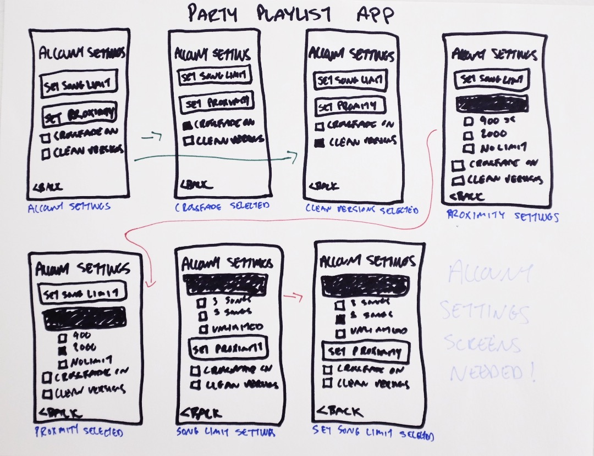
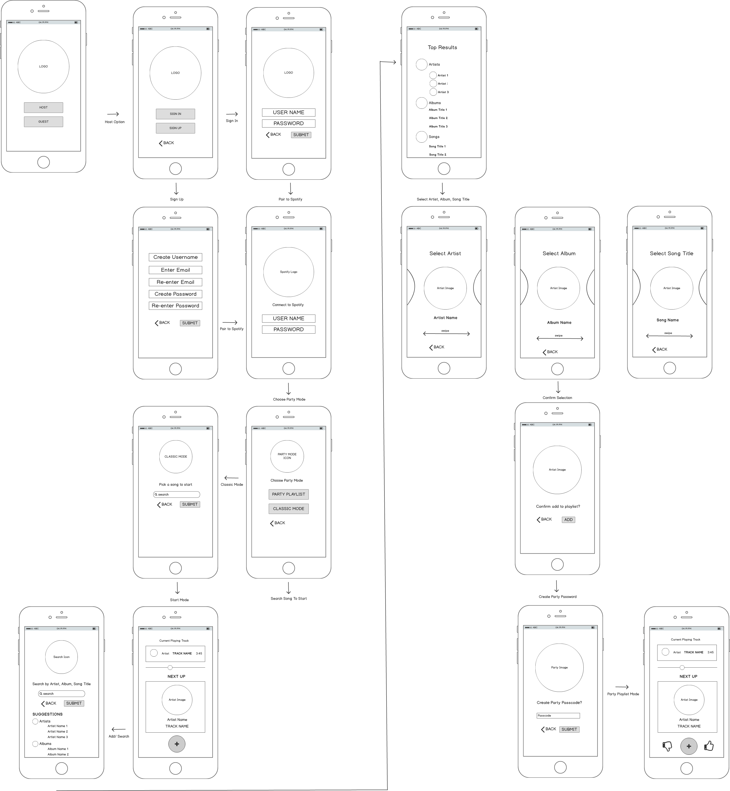
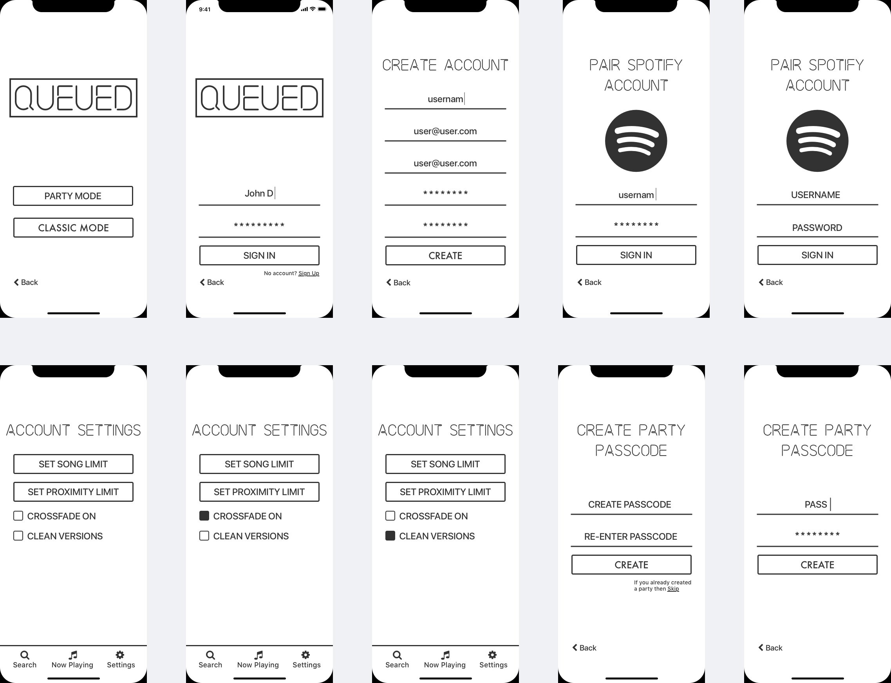
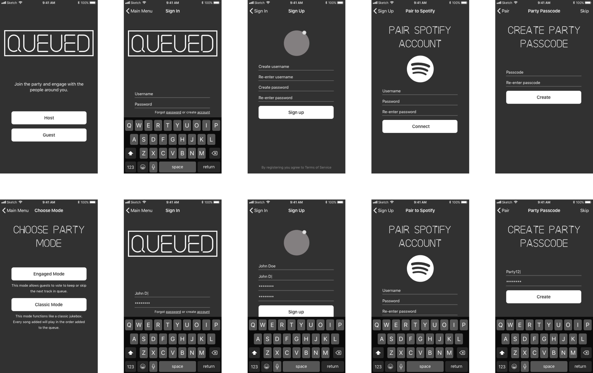

SUMMARY
Jane loves to have dinner parties and make playlists for the event. Her friends often complain about her taste in music, they always ask to her to play certain tracks or to "switch it up". They talk about the good old days when you could use a jukebox and everyone could hear what they wanted to hear and get a turn. They think music applications are so complicated to use and none of them let your guests add to the queue but not anymore! This is just one example a frustration that led to the creation of Queued.
PROBLEM
Music applications lack the ability to give your guests control and let everyone experience the fun.
- Applications are too complicated to meet the needs of wide age groups that aren't used to technology
- Most applications are missing the option to queue music to a playlist
- Technology is forcing people to be less engaged with each other in the music market
- You have to create an account or have a subscription for most applications
SOLUTION
Queued is a music application that allows the host to create a party playlist and give the guests the party passcode. The host will choose either engaged mode which allows users to add songs and then like or dislike them. If a song is disliked more than it is liked before the current playing song ends then that song will me moved to the end of the queue. The second mode is classic mode and it functions just like a classic jukebox. If a song is added to the queue then it will be played in the order it was added. The host can determine how many songs a guest can add per hour and is the only one that can delete songs from the queue.
View Sketch PrototypeDEVELOPED
For this project I also decided to code a product landing page for the application. I wanted to create a website that would give the potential users an understanding of the goals of Queued with the intentions of converting them into customers. The site is built with HTML, CSS, JQuery and uses CSS grid layout for responsiveness.
View Landing PageMY PROCESS


COMPETITIVE ANALYSIS
The music application market is dominated by many recognizable names like Spotify, Pandora, Apple Music, and Amazon Music services however, the largest companies all lack the ability to allow guests to queue music to one curated playlist at the same time. There are 3 popular companies that are currently doing various versions of this but all lack either key features or easy to user interfaces. Check out my full analysis to see how I identified a way to break into a competitive market.
View AnalysisUSER RESEARCH HIGHLIGHTS
96%
People use music application programs on a daily basis
63%
Said they want to be able to be able to add their favorite tracks to playlists at parties and events
Free for guests
We didnt want to add another cost to users so having the ability to connect to the host account was a major factor in design.
USER PERSONAS
Mike
38 y/o Photographer
“Every party I go to people seem disengaged. Between taking pictures to post on instagram and sending out tweets no one is talking to each other!”
Goals
Mike's goal is to get people to engage with each other in social environments. He would love if him and his friends wish technology could be used to bring people together.
Cheryl
65 y/o Retired School Teacher
“Technology is so complicated, I remember when I could push one button to get through the jukebox music and another to select the song!”
Goals
Cheryl's goal is to get find a music app that is free to use, doesn't require an account to use and has a simple user interface that she can navigate.
USER STORIES
Once we identifed the opportunity for a new music application and had research to back it up user stories were created to highlight the main features of the product and determine an MVP. The user stories were then pulled into sketch and mapped to user flows.
View User StoriesUSER FLOWS
SITEMAP
Now that I had a mapped out user flow I continued on in the process and built out a sitemap so I had a skeleton structure to begin creating wireframes and artboards. The application will have a host and guest path that the user's can take so the sitemap below represents those two paths broken into screens.
BRANDING
Moodboard
Logo
The inspiration for branding came from neon signs and classic jukeboxs popular in the 80's. I wanted the branding to be timeless and inspiration from neon signs gave it a retro and futuristic look that can stand the test of time. Mind mapping helped me come up with the name Queued and then through sketching and many iterations the logo was created.

Color Palette
Color selection was kept limited due to screen size and the fact that album artwork would take up most of the screen and I didn't want to take away from the simplicit design. Pops of color are used for the buttons and to highlight the logo.
Typography
SF
San Francisco
The system font for iOS, macOS, tvOS, and watchOS.
WIREFRAMING
This project went through 4 iteration stages. Sketching and whiteboarding was used before I brought the design into Balsamiq. I then tested in Invision before moving into Sketch where the artboards were created. Two more rounds of testing were done before visual design was applied to the final artboards.
Wireframe Sketching
Balsamiq Wireframes
First Iteration
Second Iteration

USER TESTING
User Survey Questions
Queued came from an idea a friend and I had and we thought that others felt the same way but we didn't have proof that this was the case until we began research. An initial survey was created to identify if users felt the same pain points we felt about the music application market and if there was a need for another music app. Based on the results of our initial survey we recognized the need and potential market so we created a competitive analysis to further research the market.
View User Survey ResultsInvision Prototype 1
This is the first prototype that was created for Queued. After whiteboarding with post it notes to create user flows I wanted to get screens together to get a real world feel for the flow of the application. This was tested with a small group and early opportunities were identified and adjusted as I continued testing.
View Prototype 1Invision Prototype 2
This prototype was built out taking a different approach to iOS design and based on user feedback it didn't feel native enough and I decided to stick to what user's were comfortable with and built the app as close to native iOS guidelines as possible but maintain it's own uniqueness that would be recognizable.
View Prototype 2Sketch Prototype 3
Once all of the updated artboards were created following specific iOS guidelines an additional prototype was built using Sketch's new prototyping feature before we applied visual styling.
View Prototype 3Sketch Final Prototype
Visual styling was then applied preference testing was done on the button elements and alignments. Once those tests were completed and changes were applied we felt confident with initial stages of design had the completed Queued prototype!
View Final PrototypeDEVELOPMENT
For this project I decided to code a product landing page for the application. I wanted to create a website that would give the potential users an understanding of the goals of Queued with the intentions of converting them into customers. The site is built with HTML, CSS, JQuery and uses CSS grid layout for responsiveness.
CONCLUSION
Queued was the first mobile application I have designed and I learned how important testing is in application development. The complexity of keeping the experience as simple as possible and priortizing all of the user's need is a challenging task. In the world we live in today user's are delivered so much information on a daily basis. Technology often increases the complexity when taking a real world object and turning it into a mobile application. A jukebox was a huge object but it did what it was designed to do well. Our goal was to take that classic memory and update it to meet the needs of a variety of users today and not take away from its simplicity and I believe I accomplished that goal. Queued puts the party in the guests hands so they can make memories that will last forever and experience it with each other.